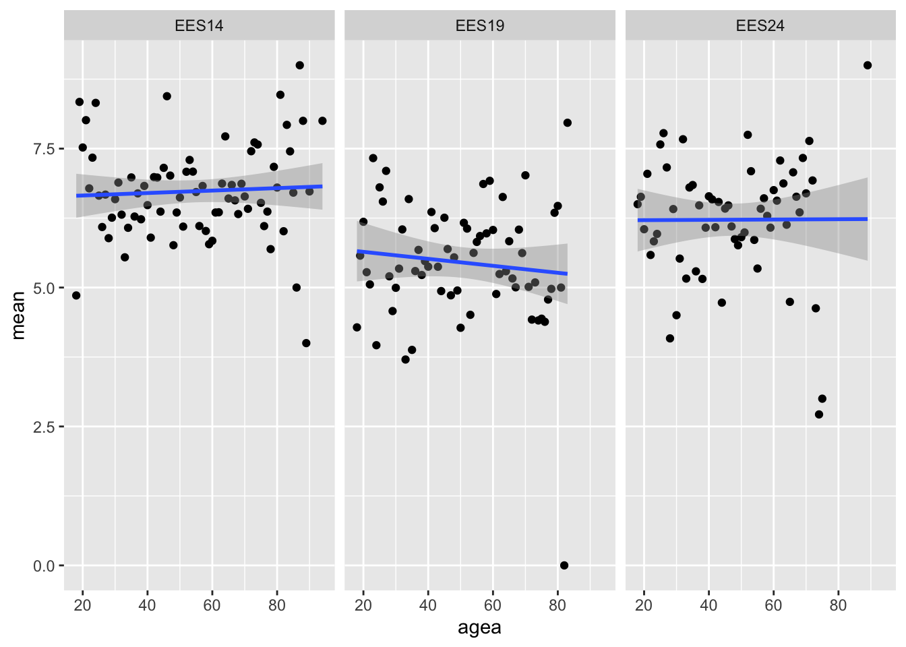
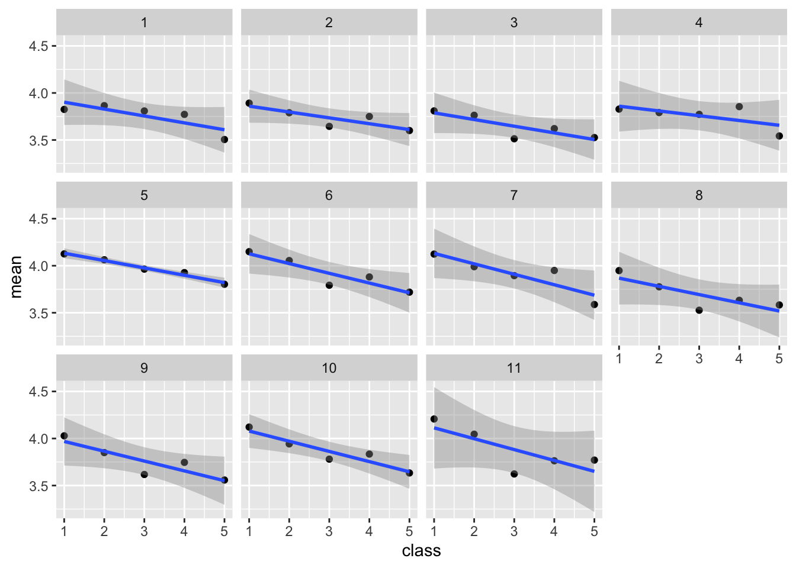
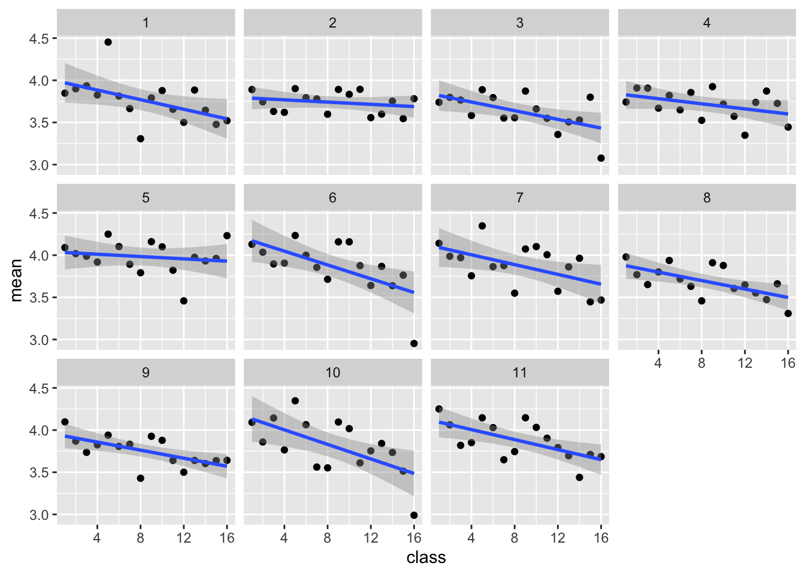

Reading the European Social Survey (ESS) and Voter Study (VS) processed files from the sub-directory “data”.
Code
library(tidyverse)library(haven)library(gt)library(gtsummary)library(plotly)# Function to get the name of the latest fileget_latest <-function(file_pattern){ file_list <-list.files(path ="./data", pattern = file_pattern) latest_file <-tail(sort(file_list), n =1)return(latest_file)}# Read file in the root of sub-folder "data" with name containing "ESS" df_ess <-read_dta(paste0("data/", get_latest("ESS")))# Read file in the root of sub-folder "data" with name containing "VS" df_vs <-read_dta(paste0("data/", get_latest("VS")))# Read country with cross country data df_eu <-read_dta("./data/ess/ess_eu.dta")
2.1 Over time
The Figure 2.1 below shows the mean values for ‘Government should reduce income differences’ by round. Overall there is a stable agreement (mean = 3.8). Rounds 5-7 (2010-2014) as well as 10-11(2022-2024) show a slightly higher agreement compared to other rounds.
Code
(df_eu |>group_by(round =as_factor(essround), cntry) |>mutate(gincdif_inv =6- gincdif) |>summarise(mean =weighted.mean(gincdif_inv, w = pspwght, na.rm = T),se =sd(gincdif_inv, na.rm = T)/sqrt(length((gincdif_inv)))) |>mutate(Country =if_else(cntry =="IE", "Ireland", "Other EU")) |>ggplot(aes(x = round, y = mean, group = cntry, color = Country)) +geom_line(aes(group = cntry), size =0.4, data =~subset(., Country !="Ireland"))+geom_point(data =~subset(., Country =="Ireland")) +geom_line(aes(group = cntry), size =0.8, data =~subset(., Country =="Ireland"))+scale_color_manual(values =c("darkgreen", "grey85"))+ylim(1,5) +theme_classic() +theme(legend.position ="bottom")) |>ggplotly() |>layout(legend =list(orientation ="h", x =0.4, y =-0.2))
Figure 2.1: Mean values for ‘Government should reduce income differences’ by round
Figure 2.2 shows the density of responses for the scale on support for redistribution of wealth. The mean values are similar for 2014, 2019 and 2024. However, the distribution seems is less skewed in 2024 compared to 2014.
Table 2.1: Mean values by gender and study in 2024
Gender
ESS
VS
Male
4.0
6.3
Female
3.9
6.1
2.3 Age
The relationship between age and the response variable seems to change across rounds. As shown in Figure 2.3, early rounds suggest that older respondents support more the government reducing income differences, whereas the latest round (11) and round 8 seem to indicate the opposite.
Figure 2.4: Scatter plot for ‘wealth redistribution’ by age and study

2.4 Social class
Figure 2.5 suggests a negative relationship between social class and the main ESS response variable. The higher the social class, the lower the support for the government to reduce income differences.
df_ess |>mutate(class_inv =6- class5) |>group_by(essround, class = class_inv) |>summarise(mean =weighted.mean(gincdif_inv, w = pspwght, na.rm = T)) |>ggplot(aes(x = class, y = mean)) +geom_point() +geom_smooth(method ='lm') +facet_wrap(~essround)
Figure 2.5: Scatter plot for ‘income differences’ by social class (5 groups) and round

Code
df_ess |>mutate(class_inv =17- class16) |>group_by(essround, class = class_inv) |>summarise(mean =weighted.mean(gincdif_inv, w = pspwght, na.rm = T)) |>ggplot(aes(x = class, y = mean)) +geom_point() +geom_smooth(method ='lm') +facet_wrap(~essround)
Figure 2.6: Scatter plot for ‘income differences’ by social class (16 groups) and round

2.5 Multivariate
The Table 2.2 below shows the coefficients of an OLS regression model on the support for government reducing differences in income levels. The overall explanatory power of the model is low. The effect of age seems to be neglectable. Both the social class and subjective income suggest that respondents in more precarious economic situation tend to be more favourable of the government reducing income differences.
Code
lm(gincdif_inv ~factor(essround) + agea +as_factor(gndr) +as_factor(class5) +as_factor(hincfel), weights = pspwght, data = df_ess) |>tbl_regression(include =c("agea", "as_factor(gndr)", "as_factor(class5)", "as_factor(hincfel)"), ) |>bold_p(t =0.05, q =FALSE) |>add_glance_source_note() |>as_gt() |> gt::tab_source_note("Time fixed effects (ESS Round) omitted from the table but included in the model") |>tab_options(table.width =pct(70))
Table 2.2: OLS regression coefficients for ‘income differences’
2.4 Social class
Figure 2.5 suggests a negative relationship between social class and the main ESS response variable. The higher the social class, the lower the support for the government to reduce income differences.
Code
Code